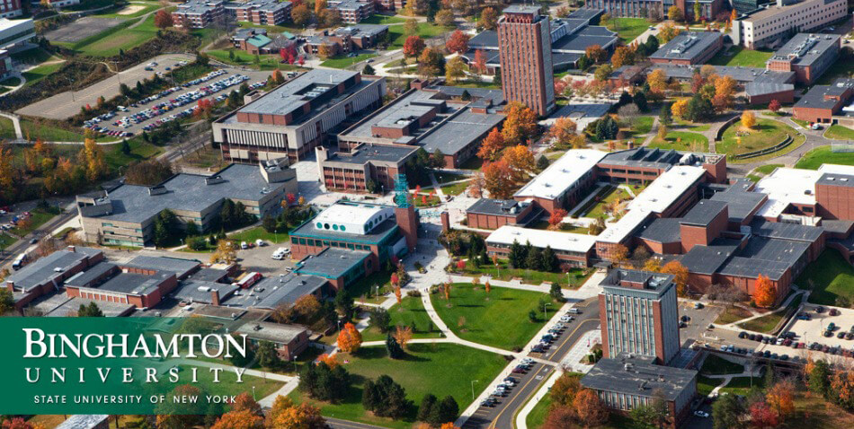
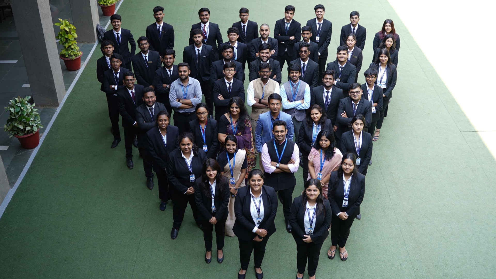

CHRIST (Deemed to be University) Pune Lavasa Campus is a world-class institution that offers
students a broad, interdisciplinary education with an international perspective and one of the
most vibrant research programs in the nation. Established in 2009, it is recognized as one of the
top private universities in India, often referred to as a "Public Ivy." The university offers a
wide range of undergraduate, graduate, and doctoral programs, with a strong emphasis on research,
sustainability, and diversity. CHRIST has a vibrant campus life with over 450 student organizations
and NCAA Division I athletics. Known for its academic excellence, the university attracts students
from all 50 states and over 100 countries.
About Binghamton University
Binghamton University is a world-class institution that offers students a broad, interdisciplinary
education with an international perspective and one of the most vibrant research programs in the nation.
Binghamton University, a public research university in Vestal, New York, is part of the State University
of New York (SUNY) system. Established in 1946, it is recognized as one of the top public universities
in the United States, often referred to as a "Public Ivy." The university offers a wide range of
undergraduate, graduate, and doctoral programs, with a strong emphasis on research, sustainability, and
diversity. Binghamton has a vibrant campus life with over 450 student organizations and NCAA Division I
athletics. Known for its academic excellence, the university attracts students from all 50 states and
over 100 countries.

Department of Commerce

The Department of Commerce at CHRIST (Deemed to be University) Pune Lavasa Campus is a world-class
institution that offers students a broad, interdisciplinary education with an international
perspective and one of the most vibrant research programs in the nation. Established in 2009, it is
recognized as one of the top private universities in India, often referred to as a "Public Ivy." The
university offers a wide range of undergraduate, graduate, and doctoral programs, with a strong
emphasis on research, sustainability, and diversity. CHRIST has a vibrant campus life with over 450
student organizations and NCAA Division I athletics. Known for its academic excellence, the
university attracts students from all 50 states and over 100 countries.
IC2SMA2 2025
The International Conference on Computer Science, Mathematics, and Applied Applications (ICCSMAA)
is an annual conference that brings together researchers, academics, and industry professionals
from around the world to discuss the latest developments in computer science, mathematics, and
applied applications. The conference provides a platform for researchers to present their work,
exchange ideas, and collaborate on new projects. ICCSMAA covers a wide range of topics, including
artificial intelligence, machine learning, data science, cybersecurity, and more. The conference
features keynote speakers, technical sessions, workshops, and social events, providing attendees
with a unique opportunity to learn, network, and engage with the global research community.
IC2SMA2 2025
Designed, Developed and Maintained by CHRIST Infotech